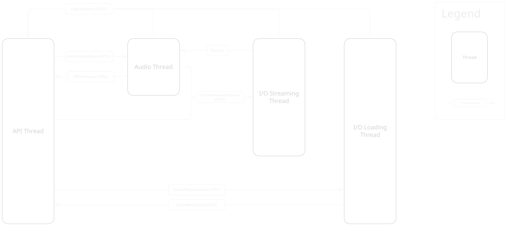
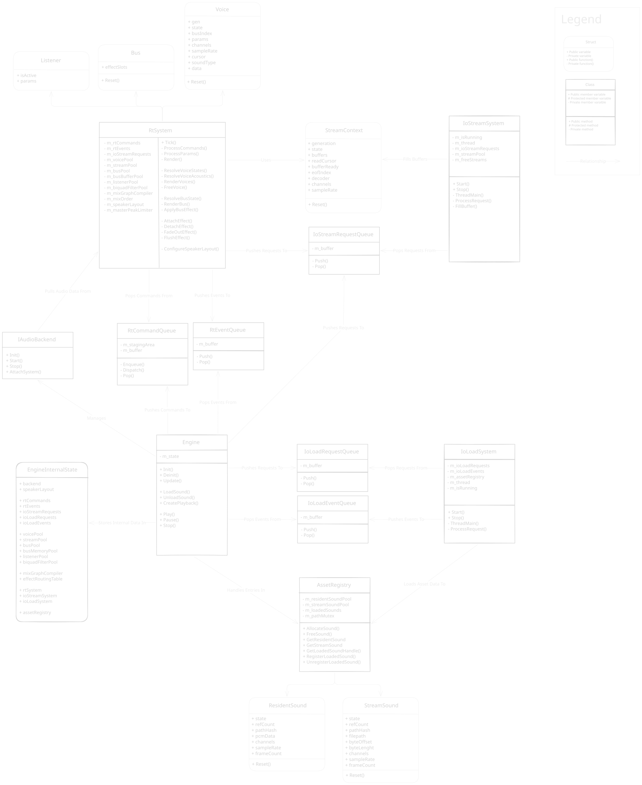
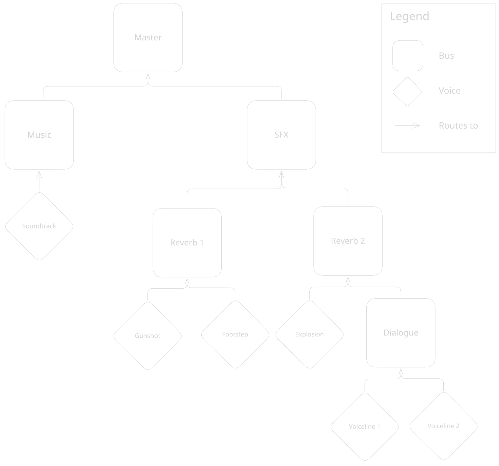
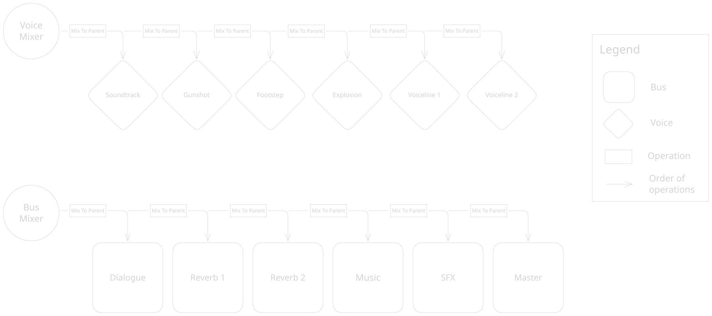

Architecture¶
Threading Model¶
DALIA splits its processing across four threads in total (one of them being the thread that the API is being called from). The engine delegates its workload to three internal subsystems. To do this efficiently without locking any of the priority threads (the API thread and the audio thread), DALIA makes use of lock-free queues for most of its inter-thread communication.
Thread Boundary Diagram¶

The main API Thread is where Engine::Update() is called. It acts purely as a command dispatcher. When a
call to the engine is made, it is packaged into a command struct and pushed into a lock-free queue. When
Engine::Update() is called, all commands accumulated since the last update call are dispatched to the other
threads for processing.
The Audio Thread (RtSystem) is a real-time, high-priority thread driven by the OS. This thread pops and processes
commands from the command queue and renders the audio frame.
The IO Streaming Thread (IoStreamSystem) is a background worker thread that upon request, fills stream buffers
with PCM data.
The IO Loading Thread (IoLoadSystem) is a background worker thread that upon request, opens and reads file
handles and file data into memory.
Engine Structure¶
Class Diagram¶

To avoid the overhead of dynamic allocations during runtime, the engine pre-allocates all memory it will need during
Engine::Init(). All of this memory including the contiguous arrays (pools) that hold voices, buses, and assets is
owned by a single, centralized EngineInternalState struct. The engine injects pointers to the pre-allocated
memory-pools into the three subsystems (RtSystem, IoStreamSystem, and IoLoadSystem) upon creation. The subsystems hold no state, they simply act on the memory
provided to them by the internal state.
Mixing Graph¶
The DSP pipeline is a Directed Acyclic Graph (DAG). In order to route audio dynamically, every node (voice or bus) holds a reference (more specifically an index) to its parent node.
Mixing Hierarchy Diagram¶

This system is designed for CPU cache efficiency. The engine maintains a flat, topologically sorted array of active nodes. During an audio frame, the audio thread simply runs through this contiguous array, accumulating audio data into the correct parent buffers. To achieve this, the engine intentionally trades memory for CPU performance by pre-allocating intermediate buffers for every bus during initialization.
Mixer Processing Diagram¶

Every audio frame is evaluated in two passes: The Voice Pass and the Bus Pass. During the Voice Pass, the engine iterates over all active, playing voices. It reads their audio data and applies transformations (volume, playback rate, spatialization, and more), and mixes the output into their parent bus. With the voice data fully accumulated, the Bus Pass runs through the topology sorted bus hierarchy. For each bus, it processes any attached DSP effects, applies volume and mixes the output into its parent bus. This pass finishes when all output data is mixed into the Master output.